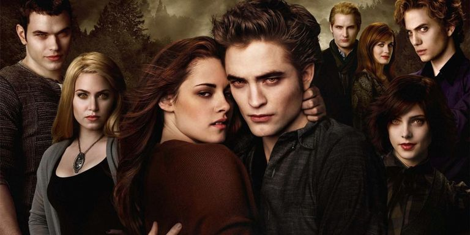

The Twilight Saga: The Bestest Movies Ever Made

When The Twilight Saga was borne unto our unworthy Earth:
| Entries in The Twilight Saga |
Year of Release |
| Twilight |
2008 |
| New Moon |
2009 |
| Eclipse |
2010 |
| Breaking Dawn - Part 1 |
2011 |
| Breaking Dawn - Part 2 |
2012 |
Famous and romantic quotes from The Twilight Saga:
- Edward Cullen: It's an extraordinary thing to meet someone who you can bare your soul to and accept you for what you are.
- Bella Swan: These violent delights have violent ends. And in their triumph die, like fire and sploosh. Which, as they kiss, consume…
- Jacob Black: I'm gonna fight for you, until your heart stops beating.
Internet hyperlinks regarding The Twilight Saga: